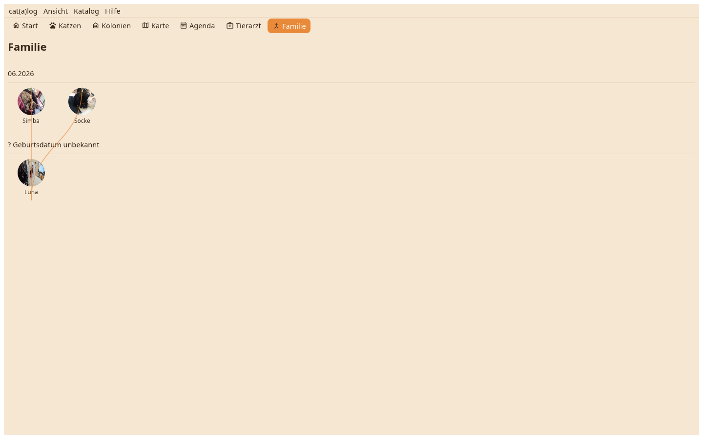

Jede Katze mit Verwandten als ihr Gesicht und ihr Name, von der ältesten zur jüngsten und nach dem Geburtsmonat gruppiert; eine Linie verbindet eine Mutter mit ihren Kitten, Wurfgeschwister stehen nebeneinander.

Familie ergibt sich aus dem Feld Mutter und dem Geburtsdatum: Kitten einer Mutter, am selben Tag geboren, sind ein Wurf. Eine Katze ohne Mutter, Vater oder Kitten wird nicht gezeigt; eine Katze ohne Geburtsdatum steht in einer eigenen Reihe. Ein Klick öffnet die Katze.